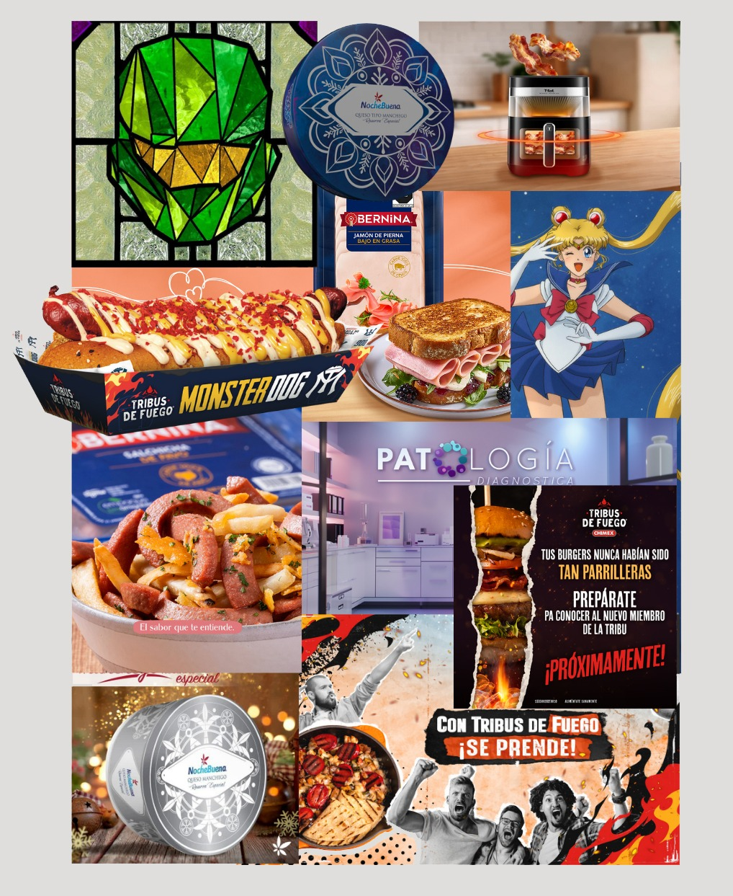

Alejandra
García
Diseñadora gráfica senior enfocada en branding estratégico, publicidad y narrativa visual.
Con más de 15 años de trayectoria en agencias de publicidad, hoy ayudo a marcas y negocios independientes a construir una identidad visual sólida y estratégica. Mi enfoque combina el rigor del diseño comercial con la flexibilidad de la ilustración digital, logrando piezas que no solo destacan, sino que funcionan. Especialista en branding, diseño publicitario y conceptualización creativa. Ciudad de México | Disponible para proyectos freelance.

Portafolio
Branding & Visual Identity
Identidades estratégicas y rediseños.
02Social Media Content
Contenido digital para múltiples marcas.
03Motion Graphics
Animación funcional y movimiento de marca.
04AI Visual Direction & Strategy
Ideación, retoque y dirección de arte asistidos por IA.
05PoS & Advertising Design
Retail, campañas y entornos comerciales.
06Illustration & Personal Work
Diseño de personajes, anime, arte conceptual y estudios vectoriales.